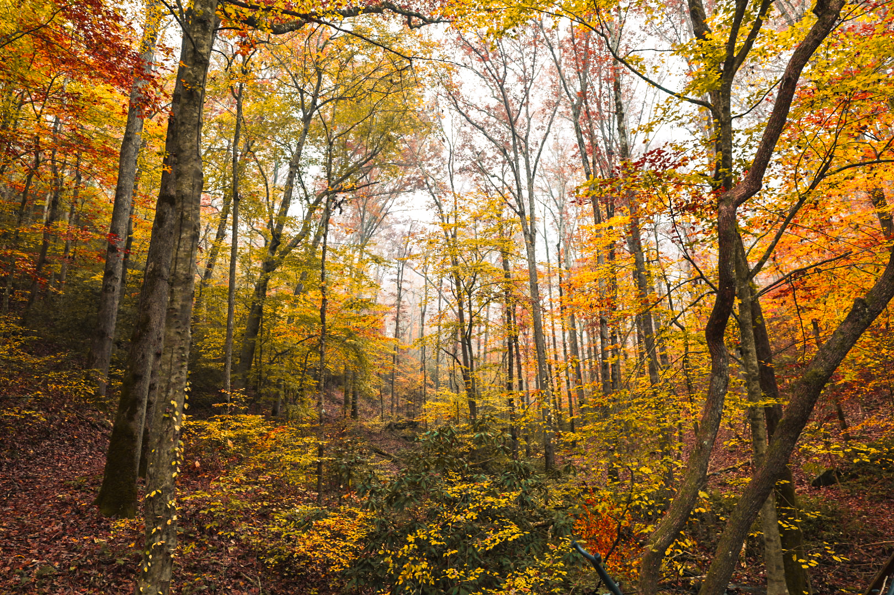
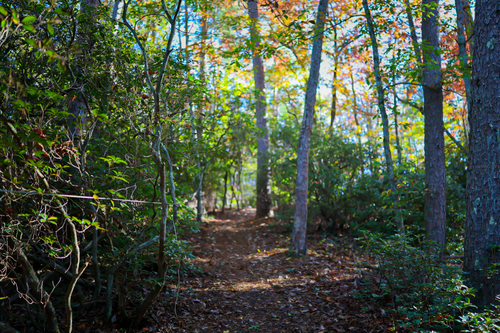
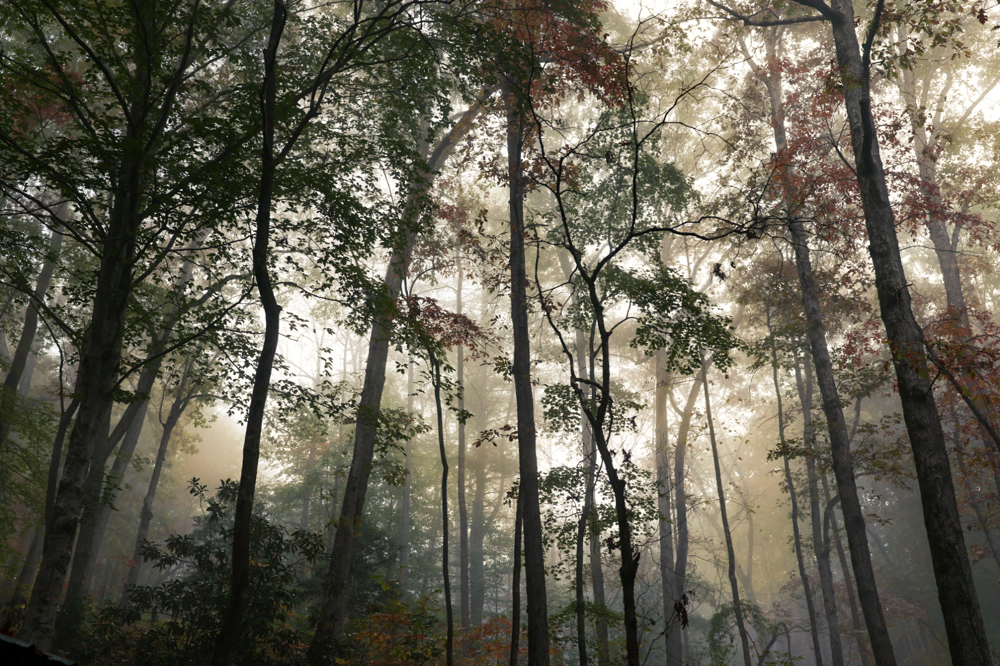
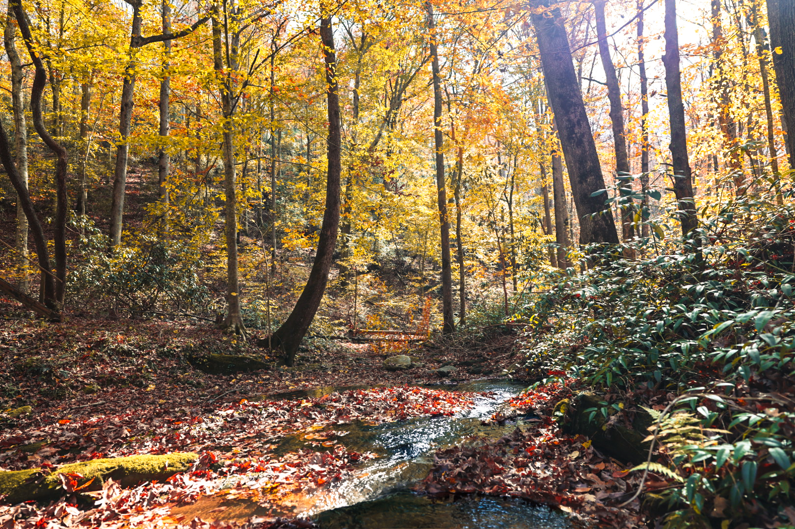
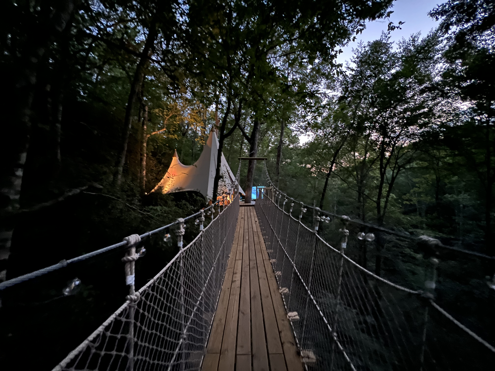
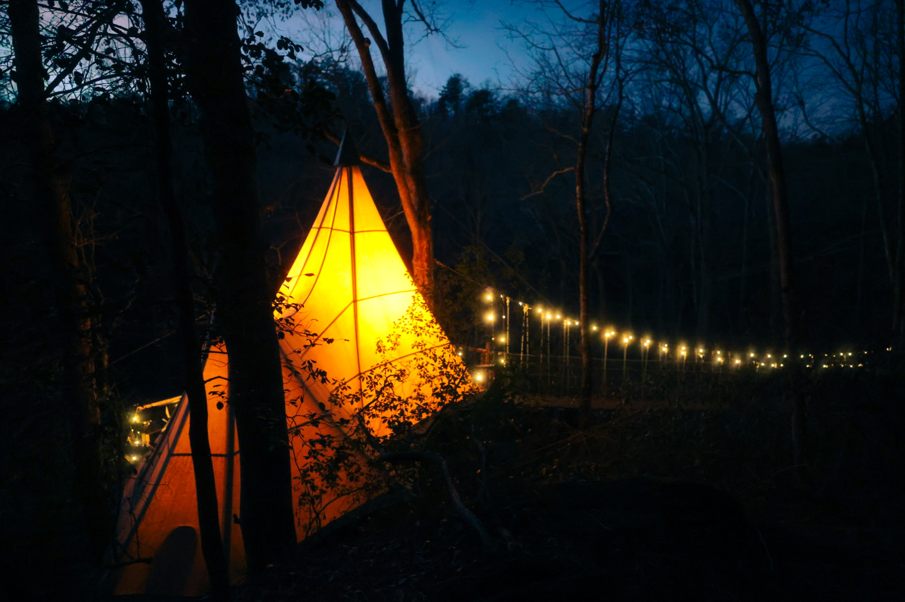

Local Guide
Your Guide to Dahlonega &
the North Georgia Mountains

Wine Country
Georgia's Original Wine Region
Dahlonega sits at the heart of Georgia's wine country — a stretch of foothills with the elevation, soil, and climate to produce wines that surprise even the skeptics.
Wolf Mountain Vineyards
Hilltop vineyard with panoramic views. Sunday brunch with live music. Serious wines in a setting that doesn't take itself too seriously.
Mick's pick: Wolf Mountain on a clear afternoon.
Montaluce Winery & Restaurant
Tuscan-inspired estate with a full restaurant. Tasting room overlooking the vines. Best for a long afternoon with nowhere to be.
Kaya Vineyard & Winery
Intimate family vineyard with mountain views. Relaxed tastings. The kind of place where the winemaker pours your glass.

Hiking & Trails
The Southern Tip of the Appalachian Trail
Some of the most accessible and dramatic hiking in the Southeast — from easy waterfall walks to serious summit scrambles — all within 30 minutes of Loxley.
Appalachian Trail (Springer Mountain)
The southern terminus of the AT. A pilgrimage for some. A spectacular day hike for anyone. Start where 2,200 miles begin.
DeSoto Falls
Two waterfalls on a moderate 2-mile trail. The upper falls are worth the climb. Bring a camera and shoes that can get wet.
Blood Mountain
The highest point on the Georgia AT. A challenging climb with 360-degree views from a stone shelter built in the 1930s. Earn your pizza night.

Downtown Dahlonega
Gold Rush History & Small-Town Character
America's first gold rush started here in 1828. The town square still has the courthouse with a gold-leaf steeple, surrounded by local shops, galleries, and places to eat that have nothing to do with a chain.
Dahlonega Gold Museum
The history of America's first gold rush, inside the oldest courthouse in Georgia. Small but worth the stop.
Cavendish Brewing Company
Local craft brewery on the square. Good beer, good food, good people-watching from the patio.
Local Shops & Galleries
Walk the square. You'll find handmade jewelry, local art, mountain honey, and at least one thing you didn't know you needed.

Waterfalls
Water Falling From Every Direction
The North Georgia mountains are carved by water. Dozens of waterfalls within driving distance — from easy roadside views to rewarding hikes through old-growth forest.
Amicalola Falls
The tallest cascading waterfall east of the Mississippi. 729 feet. Staircase trail or easy overlook. Stunning in every season.
Helton Creek Falls
Short, easy trail to two beautiful falls. Perfect for a quick stop on your way to or from Loxley.
Raven Cliff Falls
A 2.5-mile trail through hemlock forest to a dramatic cleft waterfall. One of the most photographed falls in Georgia.

Gold Panning
There's Still Gold in These Hills
Dahlonega was the site of America's first major gold rush. You can still pan for gold in the creeks around town — and yes, people still find it. A surprisingly fun afternoon, especially if you've never held a pan before.
Every Season Has a Story
Seasonal Highlights

Spring
Wildflowers blanket the forest floor. Mountain laurel blooms along every trail. The waterfalls run full. The light is soft and the forest smells like rain and new growth.

Summer
Tubing on the Chestatee River. Fireflies in the forest at dusk. Long evenings on the deck. The canopy is so thick the only light is green.
Fall
Color at elevation arrives earlier and lasts longer. The canopy turns gold, then crimson, then amber. It's the most popular season — and the most dramatic. Book early.

Winter
Frost on the rope bridge. Bare canopy reveals views the leaves keep secret. The fire pit feels essential. The silence is deeper. The stars are brighter. The forest is yours.